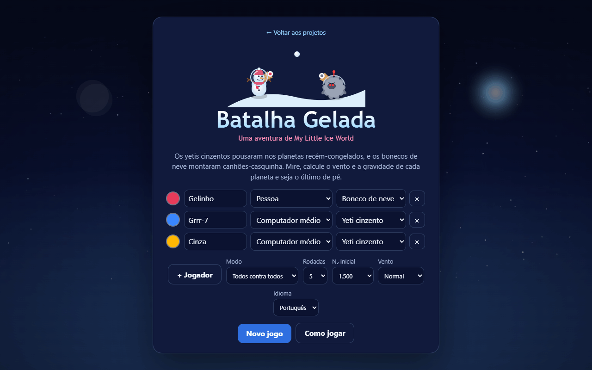
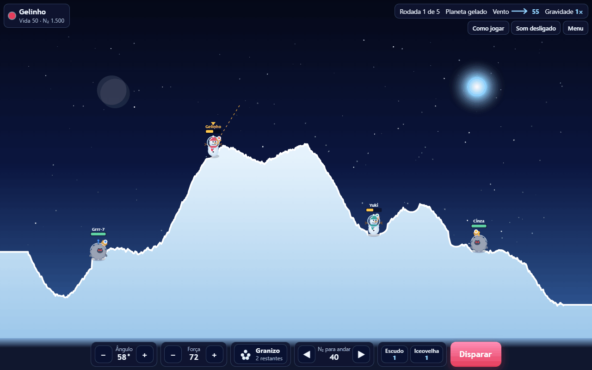
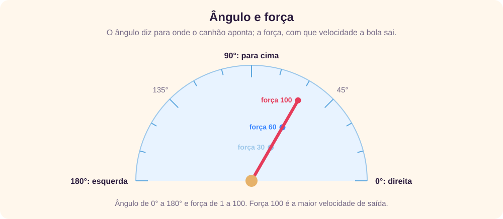
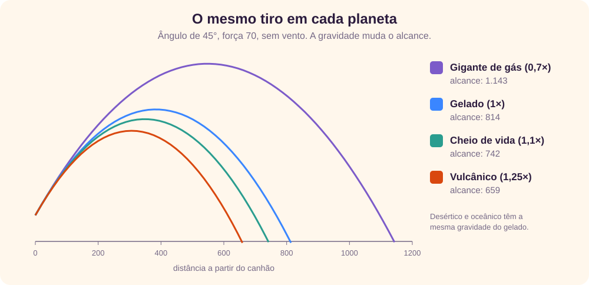
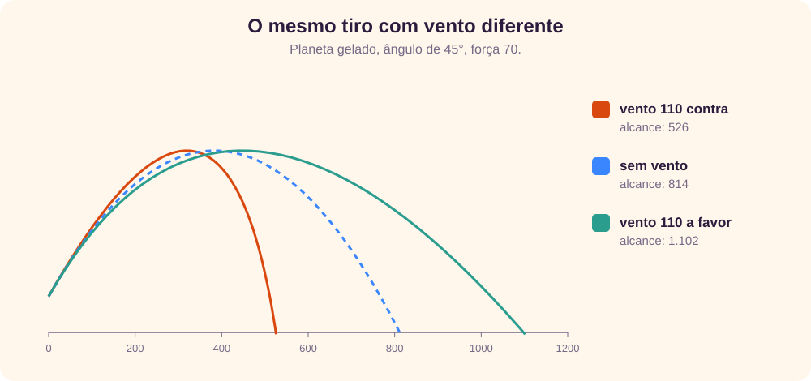
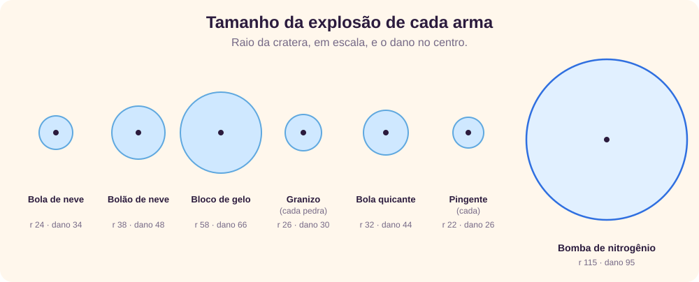
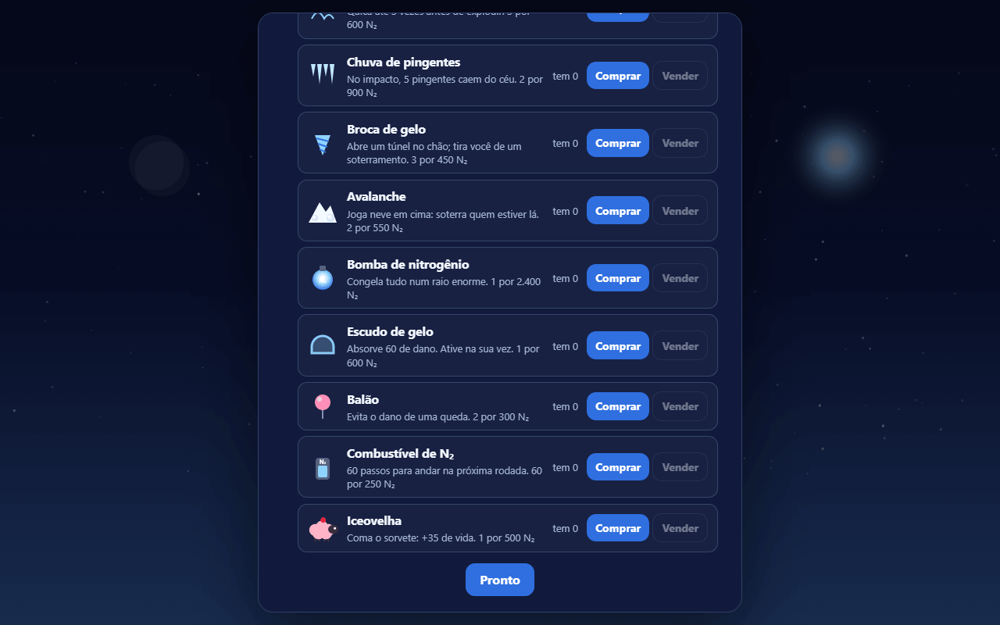

O jogo em um minuto
A Batalha Gelada é um jogo de artilharia: cada jogador tem um canhão, e na sua vez escolhe o ângulo e a força do tiro para acertar os adversários. É um gênero antigo. A Wikipédia cita jogos de computador com essa ideia desde o fim dos anos 1960 e descreve o vento e o terreno como parte deles. [1] O Scorched Earth, de 1991, juntou terreno destrutível e um arsenal de armas extremas [2], e o Atomic Tanks, de código aberto, é descrito como um clone dele, em que você ganha dinheiro para comprar armas e escudos melhores. [3]
Aqui o cenário é o universo de My Little Ice World: bonecos de neve astronautas, que viajam em naves em forma de casquinha, e os yetis cinzentos, invasores que atacam as colônias. [4] Na batalha, a casquinha virou canhão, as bolas de neve viraram munição e o nitrogênio líquido virou dinheiro.
↑ Voltar ao topoComeçando uma partida

Na tela inicial, monte a mesa com 2 a 6 jogadores. Cada um pode ser uma pessoa ou o computador em três níveis, e pode ser boneco de neve ou yeti cinzento. Várias pessoas jogam no mesmo aparelho, passando a vez.
| Opção | O que muda |
|---|---|
| Modo | Todos contra todos, ou bonecos contra yetis, em que cada raça forma uma equipe e o dano em colegas não rende N₂. |
| Rodadas | 3, 5 ou 10. Vence quem ganhar mais rodadas; no empate, quem derreteu mais adversários. |
| N₂ inicial | 0, 1.500 ou 5.000 para gastar na loja antes da primeira rodada. |
| Vento | Sem vento, normal (até 55) ou forte (até 110), multiplicado pelo fator de cada planeta. |
A partida é salva no navegador a cada vez. O botão Continuar volta de onde você parou.
↑ Voltar ao topoA tela da batalha

- Quem joga, no alto à esquerda: nome, vida, N₂ e escudo. No campo, uma seta amarela marca quem está na vez.
- Rodada, planeta, vento e gravidade, no alto à direita. A seta do vento aponta para onde ele empurra.
- Ângulo e força, com botões − e +. Segure para mudar mais rápido.
- Arma: toque para abrir a lista e trocar.
- N₂ para andar: com combustível, as setas movem o canhão.
- Escudo e iceovelha, quando você tiver.
- Disparar.
Também dá para mirar tocando ou clicando no campo: a direção do toque dá o ângulo e a distância até o canhão dá a força. No teclado, use ← → para o ângulo, ↑ ↓ para a força (com Shift, de 5 em 5), Espaço para disparar, Tab para trocar de arma, A D para andar, S para o escudo e H para a iceovelha.
↑ Voltar ao topoMirar: ângulo, força, vento e gravidade

O ângulo diz para onde o canhão aponta: 0° é para a direita, 90° é para cima e 180° é para a esquerda. A força vai de 1 a 100 e define a velocidade com que a bola sai. Sem vento, 45° é o ângulo que leva mais longe.
Gravidade
Cada planeta de My Little Ice World tem a sua gravidade, e o mesmo tiro cai em lugares bem diferentes:

| Planeta | Gravidade | Vento | Alcance a 45°, força 100 |
|---|---|---|---|
| Gigante de gás | 0,7× | 1,3× | 2.287 (mais que o campo) |
| Gelado, desértico e oceânico | 1× | 1×, 1,6× e 1,1× | 1.616 |
| Cheio de vida | 1,1× | 0,8× | 1.472 |
| Vulcânico | 1,25× | 0,6× | 1.298 |
O campo tem 1.600 unidades de largura. No vulcânico, nem a força máxima atravessa o campo inteiro; no gigante de gás, uma força média já vai longe. A primeira rodada é sempre num planeta gelado, e o planeta nunca se repete de uma rodada para a seguinte.
Vento

O vento empurra a bola o tempo todo, e quanto mais alto e mais longo o voo, mais ele pesa. Ele muda um pouco a cada vez, até 30% do máximo, então confira a seta antes de cada tiro. Com vento forte contra, um tiro baixo e forte sofre menos que um tiro alto.
↑ Voltar ao topoAs armas

O dano é maior no centro da explosão e cai até a borda. Quem está dentro do raio perde vida, inclusive você, se a explosão for perto demais.
| Arma | Na loja | Como funciona |
|---|---|---|
| Bola de neve | à vontade | Pequena: raio 24, dano 34. |
| Bolão de neve | 3 por 350 | Raio 38, dano 48. |
| Bloco de gelo | 2 por 800 | Raio 58, dano 66: cratera funda. |
| Granizo | 2 por 1.000 | No ponto mais alto do voo, abre em 5 pedras espalhadas. |
| Bola quicante | 3 por 600 | Quica até 3 vezes antes de explodir: boa para alvos atrás de morros. |
| Chuva de pingentes | 2 por 900 | Explode e faz cair 5 pingentes do céu em volta do impacto. |
| Broca de gelo | 3 por 450 | Abre um túnel de 190 unidades na direção do tiro e explode no fim. |
| Avalanche | 2 por 550 | Não causa dano: joga neve e pode soterrar quem estiver lá. |
| Bomba de nitrogênio | 1 por 2.400 | Raio 115, dano 95: derrete quase tudo por perto. |
Terreno, quedas e nevasca
Toda explosão abre uma cratera. Se o chão some debaixo de um canhão, ele cai até o novo chão. Quedas de mais de 40 unidades tiram vida: 0,3 ponto por unidade além disso. Um balão evita o dano de uma queda.
A avalanche pode deixar alguém soterrado. Soterrado, o tiro explode na boca do canhão e machuca quem atirou. Para sair, use a broca de gelo para cima ou uma explosão que tire a neve de cima.
Se a rodada se arrastar, vem a nevasca: depois de 30 tiros mais 8 por jogador (54 tiros com 3 jogadores), todos perdem 6 de vida a cada vez, até sobrar um. Ela existe porque, sem ela, dois jogadores longe um do outro podiam trocar tiros para sempre.
↑ Voltar ao topoOs itens
- Escudo de gelo (600): ative na sua vez; ele absorve os próximos 60 pontos de dano.
- Balão (2 por 300): é gasto sozinho na primeira queda que tiraria vida.
- Combustível de N₂ (60 passos por 250): vale para a rodada seguinte; cada passo anda uma unidade, e o canhão não sobe rampas íngremes.
- Iceovelha (500): coma o sorvete dela na sua vez e recupere 35 de vida, sem perder o tiro.
O N₂ e a loja
O nitrogênio líquido é o dinheiro do jogo. Você ganha N₂ assim:
| Como | N₂ |
|---|---|
| Cada ponto de dano num adversário | 3 |
| Cada adversário derretido | 500 |
| Sobreviver à rodada | 250 |
| Vencer a rodada | 1.000 |
Dano em você mesmo ou, no modo de equipes, em colegas não rende nada. Entre as rodadas, cada pessoa passa pela loja; o computador compra sozinho, e uma mensagem diz o que ele levou. Vender devolve metade do preço.

Os níveis do computador
O computador mira do mesmo jeito em todos os níveis: simula centenas de tiros com a física do jogo, inclusive o vento, e escolhe o que cai mais perto do alvo, evitando acertar a si mesmo. O que muda é o erro e a escolha das armas:
- Fácil: erra até 10° no ângulo e 9 na força e escolhe a arma ao acaso.
- Médio: erra até 3,5° e 3,5, prefere as armas mais fortes que não o atinjam, usa escudo e iceovelha quando está ferido e sai do soterramento com a broca.
- Difícil: faz o mesmo, mas erra no máximo 0,8° e 0,8, refina a mira com mais cuidado e prefere o adversário mais fraco e perto.
Contra dois computadores no Difícil, um jogador com a mira do Médio venceu 10,9% das rodadas, e com a do Fácil, 3,7%, contra 33,8% de um terceiro Difícil. [5] Para treinar, comece com adversários fáceis e vento desligado.
↑ Voltar ao topoEstratégias
Testamos estilos de jogo em 1.200 rodadas cada: um jogador com o estilo indicado contra dois computadores no Difícil, com 1.500 de N₂ inicial e vento normal. [5] Se todos jogassem igual, cada um venceria 33,3% das rodadas, com margem de erro de 2,7 pontos.
| Estilo de jogo | Rodadas vencidas |
|---|---|
| Referência: o nível Difícil | 33,8% |
| Mira sempre o adversário mais perto | 33,9% |
| Não usa escudo, iceovelha nem balão | 18,6% |
| Só usa bola de neve, não compra nada | 16,9% |
| Mira com o erro do nível Médio (até 3,5°) | 10,9% |
| Mira como se não houvesse vento | 5,7% |
| Mira com o erro do nível Fácil (até 10°) | 3,7% |
Os computadores não jogam como pessoas, então olhe para a direção dos números, não para o valor exato.
O vento é o que mais pesa
Mirar ignorando o vento derrubou as vitórias de 33,8% para 5,7%: pior do que mirar com 3,5° de erro. Antes de cada tiro, olhe a seta e o número do vento.
Cada grau conta
Errar até 3,5° bastou para cair de 33,8% para 10,9%. Ajuste aos poucos e use o rastro do tiro anterior, que fica no campo, como régua.
Gaste o seu N₂
Ficar só na bola de neve, guardando o N₂, caiu para 16,9%. As armas maiores perdoam erros pequenos de mira.
Use escudo e iceovelha
Sem os itens de defesa, as vitórias caíram para 18,6%. Um escudo de 60 vale quase dois tiros de bola de neve.
O alvo importa menos do que parece
Mirar sempre no mais perto deu o mesmo resultado que escolher o mais fraco. Prefira o tiro em que você tem mais certeza.
Cuidado com a sua própria explosão
O bloco de gelo e a bomba de nitrogênio têm raio grande. Use-os em alvos longe, ou o dano volta para você.
Numa rodada de 3 jogadores com essas regras, a mediana foi de 19 tiros no total.
↑ Voltar ao topoErros comuns
- Esquecer de olhar o vento. Ele muda um pouco a cada vez.
- Usar a mesma força em outro planeta. No gigante de gás o tiro vai muito mais longe; no vulcânico, muito menos.
- Atirar perto demais com arma grande. A explosão também acerta quem atirou.
- Cavar o próprio buraco. Crateras debaixo de você fazem cair e perder vida. Um balão ajuda.
- Ficar soterrado sem broca. Compre ao menos um pacote se os adversários usam avalanche.
- Guardar a iceovelha até tarde demais. Ela não traz de volta quem já derreteu.
Glossário
- Canhão-casquinha
- O canhão de cada jogador, feito de uma casquinha de sorvete, como as naves de My Little Ice World.
- Derreter
- Perder toda a vida e sair da rodada.
- Iceovelha
- Animal de My Little Ice World coberto de sorvete; aqui, cura 35 de vida.
- N₂
- Nitrogênio líquido, o dinheiro do jogo.
- Nevasca
- Dano de 6 por vez em todos, quando a rodada passa do limite de tiros.
- Rastro
- Os pontinhos que mostram o caminho do último tiro.
- Soterrado
- Coberto de neve: o tiro explode na boca do canhão.
- Yeti cinzento
- O invasor de My Little Ice World; aqui, uma das duas raças jogáveis.
Revisão rápida
Em resumo
- Na sua vez: ângulo, força, arma e disparo.
- 0° é direita, 90° é para cima, 180° é esquerda.
- O vento e a gravidade do planeta mudam onde o tiro cai.
- O N₂ vem de dano, de derreter adversários e de vencer rodadas; gaste na loja.
- Escudo, iceovelha e armas maiores fazem diferença.
1. Para atirar reto para cima, qual ângulo você usa?
90°.
2. O mesmo tiro vai mais longe num planeta gelado ou num gigante de gás?
No gigante de gás, que tem 0,7× da gravidade: a 45° e força 70, 1.143 contra 814 no gelado.
3. O vento é de 110 contra o seu tiro. O que acontece com um tiro a 45° e força 70 no planeta gelado?
Ele cai bem antes: 526 em vez de 814.
4. Você está soterrado. O que acontece se disparar uma bola de neve?
Ela explode na boca do canhão e machuca você. Use a broca de gelo para sair.
5. Seu tiro tira os últimos 40 de vida de um adversário e o derrete. Quanto N₂ isso rende?
120 pelo dano (3 por ponto) mais 500 por derreter: 620.
6. Nas simulações, o que mais derrubou as vitórias: errar 3,5° na mira ou ignorar o vento?
Ignorar o vento: 5,7% de vitórias, contra 10,9% com 3,5° de erro.
Referências
- Wikipédia (em inglês). Artillery game. Define o gênero e lista exemplos desde o fim dos anos 1960; o próprio artigo pede mais fontes em vários trechos.
- Wikipédia (em inglês). Scorched Earth (video game). Jogo de Wendell Hicken, de 1991, para MS-DOS, com terreno destrutível e armas extremas.
- SourceForge. Atomic Tanks. Descrito como um clone multiplataforma do Scorched Earth, sob a licença GPLv2.
- Giovani Perotto Mesquita. My Little Ice World: tutorial e estratégias. A lore dos bonecos de neve, das iceovelhas e dos yetis cinzentos.
- Simulações próprias com o jogo Batalha Gelada deste site, feitas entre jogadores do computador. Não medem pessoas.